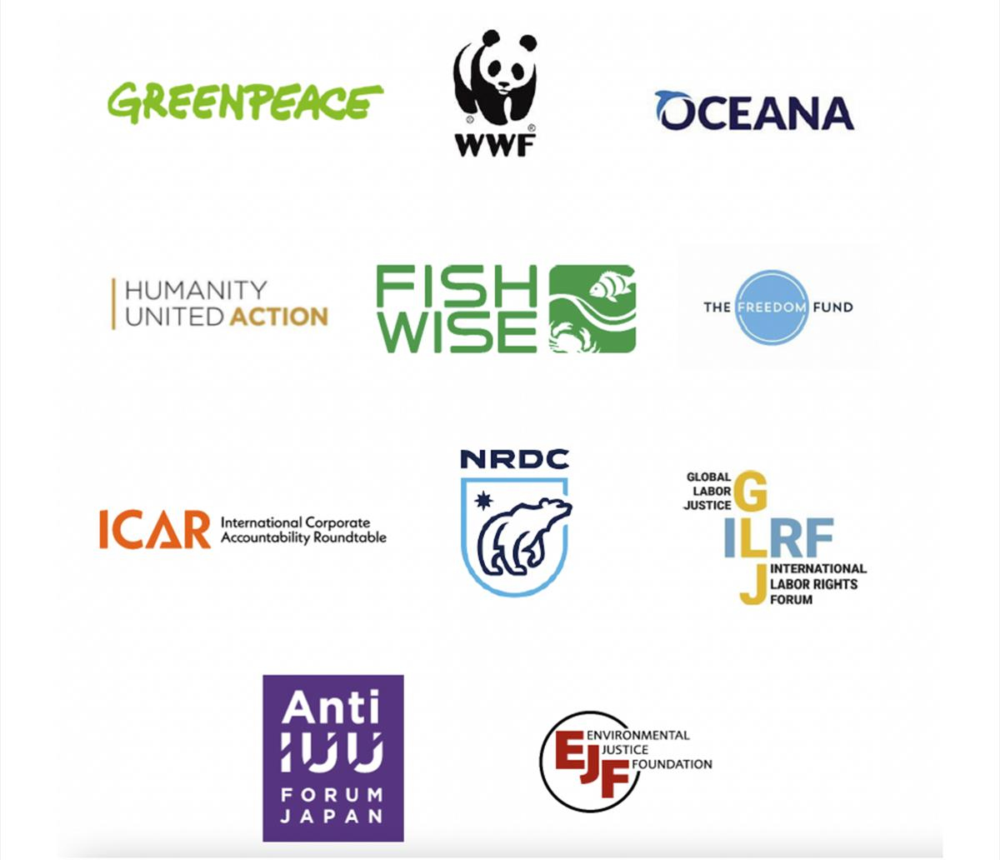

FEB 10, 2022
ONE OCEAN SUMMIT: AN URGENT OPPORTUNITY FOR EU, USA, AND JAPAN TO TURN THE TIDE ON ILLEGAL FISHING
By EJF Staff
The One Ocean Summit presents a unique opportunity to strengthen cross-national collaboration to tackle illegal, unreported, and unregulated (IUU) fishing. As a coalition of organizations working on environmental and human rights issues, we call upon the main market states; EU, US, and Japan at this One Ocean Summit to jointly work together to combat IUU fishing.
IUU fishing constitutes one of the most serious threats to sustainable fishing and to ocean function and conservation. It directly contributes to overfishing, threatening the sustainability of marine ecosystems and fish populations; undermines coastal communities’ livelihoods and food security; destabilizes the security of maritime states; creates unfair competition for fishers operating legally; and can be associated with human, drugs, and weapons trafficking and labor rights abuses in the seafood sector.
As the world’s largest and most valuable import markets, the European Union, the United States, and Japan collectively account for more than 55% of internationally traded seafood, playing a key role in the commercial exploitation of fishery products globally, and therefore an attractive target for IUU products. This confers on them a vast responsibility for ocean and fishery sustainability, worker safety, human dignity, food security, livelihoods, and key national defense interests.
IUU fishing is more effectively prevented through international cooperation. The European Union, the United States, and Japan have therefore the responsibility, and are well positioned, to adopt and implement effective tools to combat IUU fishing and labor abuses in the seafood sector. Including through (1) complementary implementation of seafood import controls, (2) improved transparency, (3) adoption of traceability requirements, (3) cooperation in monitoring, control, and surveillance, and (4) deployment of enforcement capability, capacity building funds, and diplomatic pressure.
Collaboration and real-time information sharing, and publicising those efforts, will greatly increase the effectiveness and impact of initiatives to deter illicit activities and incentivise adoption of best practices globally.
As a result, we call upon the EU, US, and Japan at this One Ocean Summit to increase cooperation in the following areas:
TRACEABILITY AND TRANSPARENCY
- Strengthen and harmonize their import control and traceability programs to protect markets from imported seafood produced through IUU fishing, forced labor, and other human rights abuses.
- Promote the adoption of tools to increase transparency around fishing operations, ownership of vessels, and seafood supply chains.
- Adopt effective tracking mechanisms and penalties to prevent global interests from benefitting from IUU fishing and forced labor activities, regardless of whether products derived from those practices enter EU, US, or Japan commerce.
FORCED LABOR
- Develop requirements for mandatory human rights due diligence plans, including risk assessments and remediation plans, and enforcement mechanisms for all companies importing seafood and fish products to combat the use of forced labor in seafood supply chains.
- Ratify, implement, and promote adoption of the International Labour Organization (ILO) Work in Fishing Convention, 2007 (No. 188), and utilize the standards within that instrument when evaluating countries for IUU fishing activities.
- Strengthen the protection of fishers’ and observers’ life at sea by ensuring the ratification of the Cape Town Agreement on the Safety of Fishing Vessels by October 2022.
CAPACITY BUILDING
- Support efforts to build partner country and civil society capacity to combat IUU fishing and related human rights abuses globally.
- Coordinate deployment of capacity building funds and technical expertise, amongst the three markets, to ensure the necessary mechanisms are in place to allow sustainable fisheries and accountability measures to prevent labor and human rights abuses to succeed and benefit workers and communities globally.
INFORMATION EXCHANGE
- Expand operational collaboration and establish routine connections of staff across the major markets to share intelligence and information collected from the import control programs to improve and complement all enforcement efforts to tackle illicit products and forced labor.
- Address corruption in the fisheries sector.
- Coordinate on the identification of countries engaged in IUU fishing and labor rights abuses and deploy diplomatic tools to encourage regulatory adoption of best practices.
- Facilitate communication with worker organizations representing fishers and seafood workers to develop an accurate picture of the IUU and forced labor risks.
We stand ready to support and aid.

SOURCE: ENVIRONMENTAL JUSTICE FOUNDATION